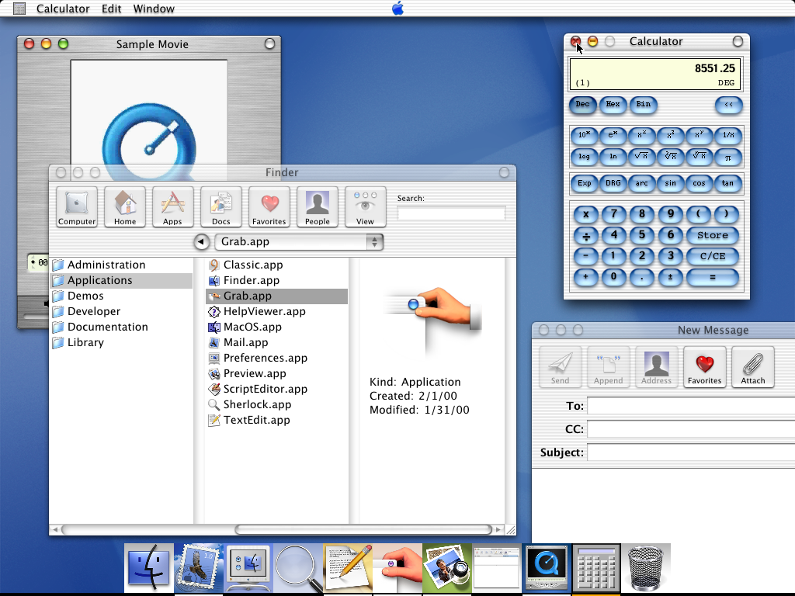

Mac OS X ‘Aqua’ interface (January 2000)
Introduced at the 2000 Macworld Expo, “It was originally based around the theme of water, with droplet-like components and a liberal use of reflection effects and translucency. At its introduction, Steve Jobs noted that “one of the design goals was when you saw it you wanted to lick it”.
Although a lot criticism is leveled at Apple for being purely style over substance, you have to hand it to them for creating such a stylish and consistent interface.
Always loved the look and feel of Aqua, and it certainly brings back alot of y2k/early 2000s nostalgia for me. .